Sam Ticknor
Feb. 8, 2018
Feb. 8, 2018
I’ve struggled to write an artist statement for many years now. And really, this is not it. It is difficult to tell what my work is "about". I'm usually rushing to make it, and the ideas are always changing. I have enjoyed making all kinds of art. Now, painting is my favorite. I work from my head, creating a scene's characters, colors, space... I make things up as I go. Sometimes I will put in a color or element that doesn’t work. Painting is really tricky to undo, so I work with those mistakes. I take longs breaks, considering what to do next.
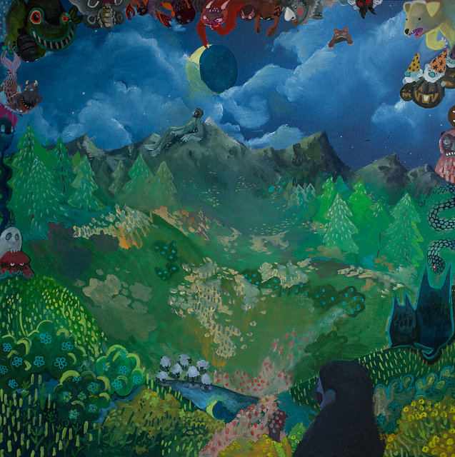
The Wide Valley
2017 |
Gouache on Canvas 40" x 40"
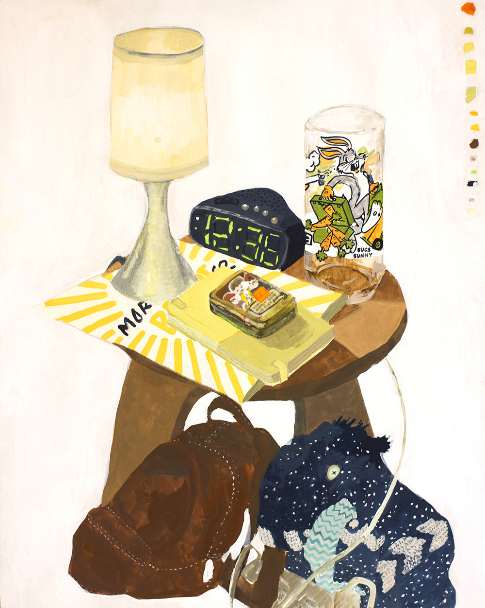
Still Life in New York
2016 |
Gouache on Paper 16" x 20"

Open Swim
2018 |
Oil on Masonite 40" x 50"
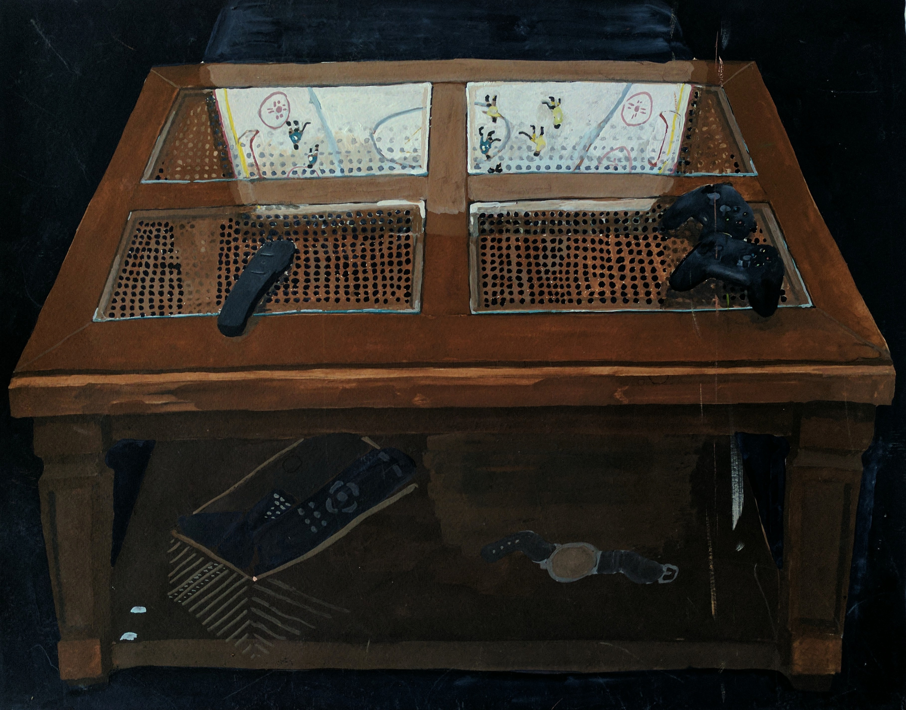
Stanley Cup Finals
2016 |
Gouache on Paper 20" x 16"
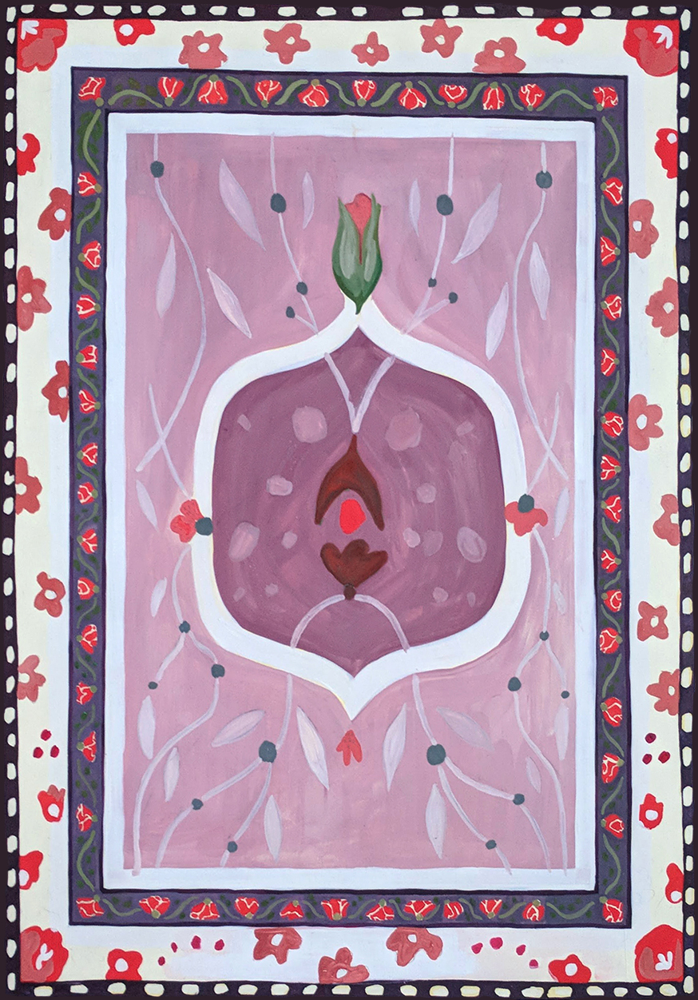
Carpet, In Bloom
2018 |
Gouache on Board 13" x 18" + Frame
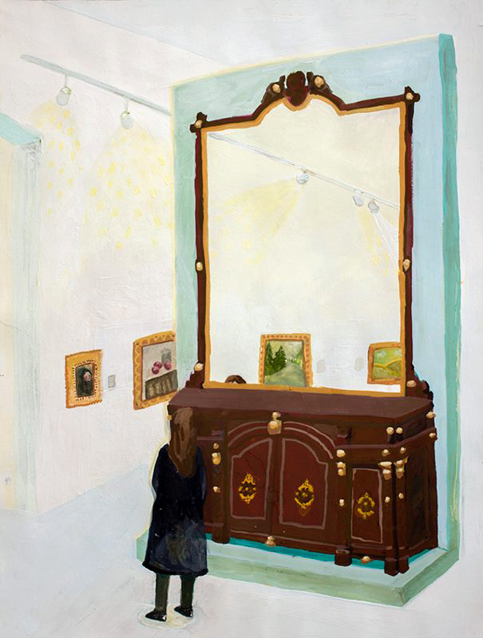
Learning Fractions, A Museum Portrait
2016 |
Gouache on Paper 36" x 28"

A gift
2018 |
Oil on Board 13" x 18"

Indecision and Friday Evening Cartoons
2017 |
Oil on Canvas 20" x 30" (2)
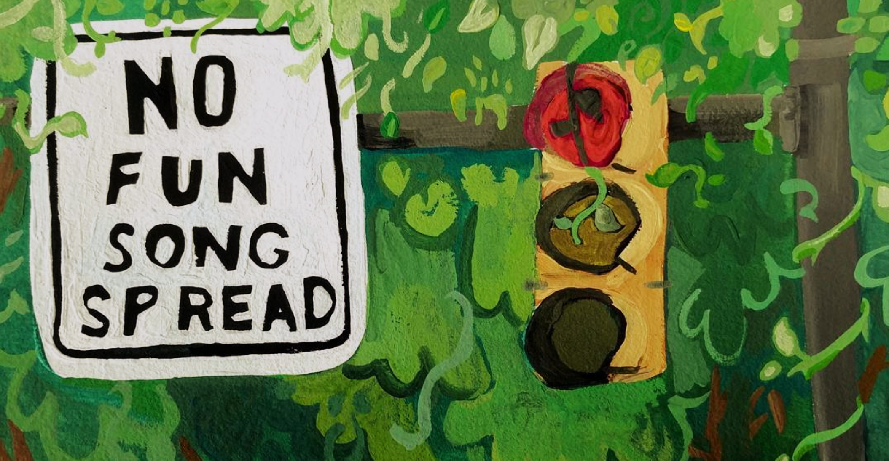
Turning On Red
2017 |
Gouache on Paper 10" x 5"
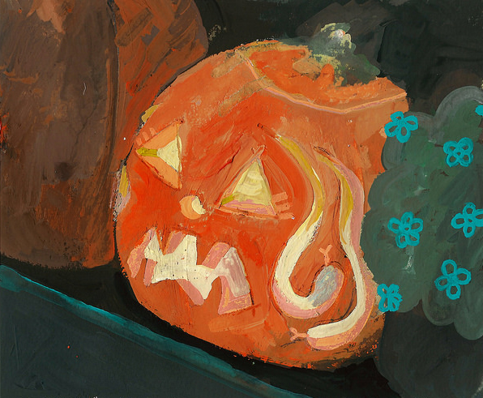
Medusa O' Lantern
2016 |
Gouache on Paper 10" x 10"
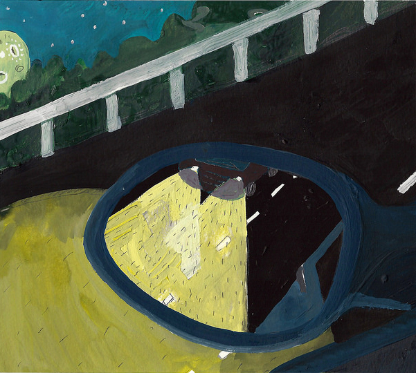
Student Driver
2016 |
Gouache on Paper 10" x 10"

A Dreamed Up Place
2016 |
Gouache on Paper 16" x 16"
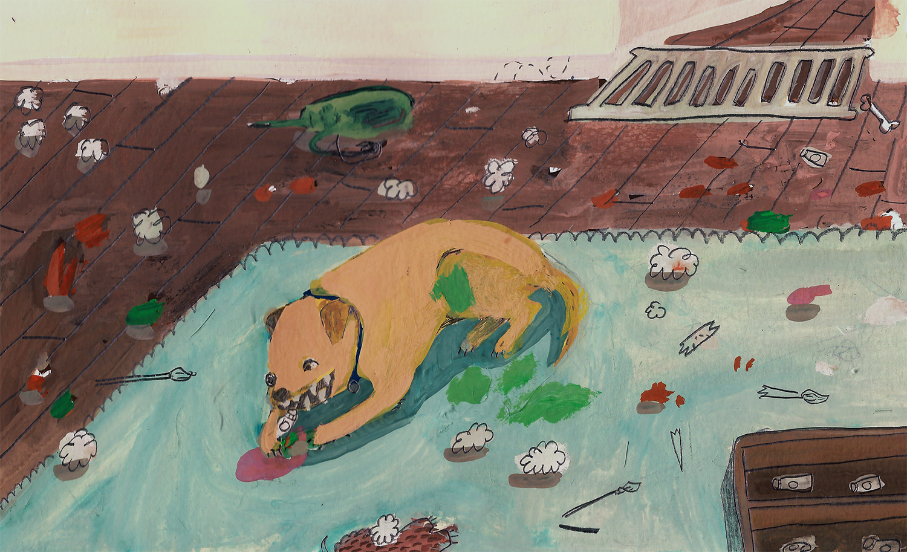
The Painter's Puppy
2016 |
Gouache on Paper 9" x 5.5"
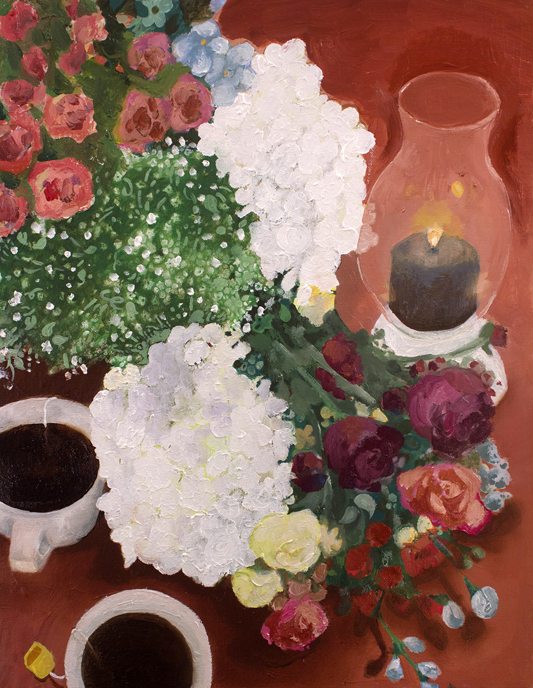
Still Life in Pittsburgh
2016 |
Oil on Canvas Board 14" x 17"
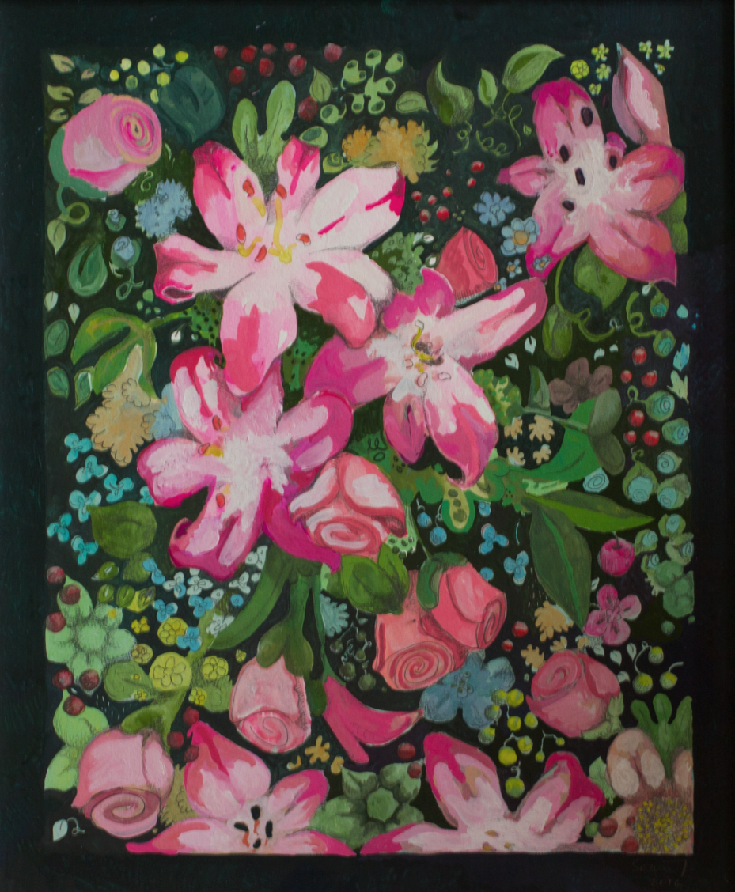
Flowers from Dad
2016 |
Gouache on Paper 18" x 22" Framed
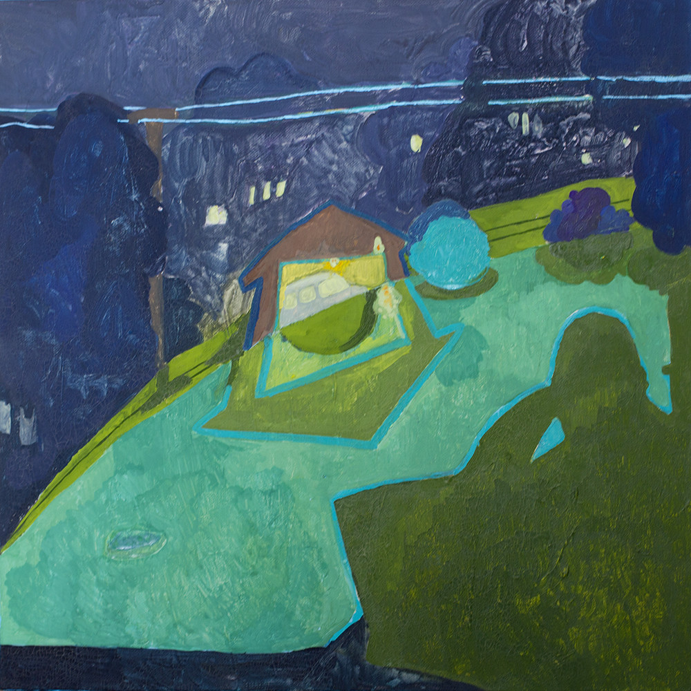
Night Vision
2016 |
Gouache on Canvas 24" x 24"
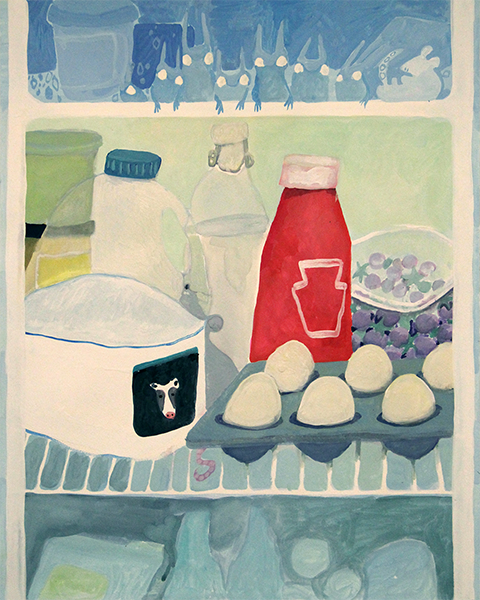
Friends Like These
2016 |
Gouache on Paper 16" x 20"
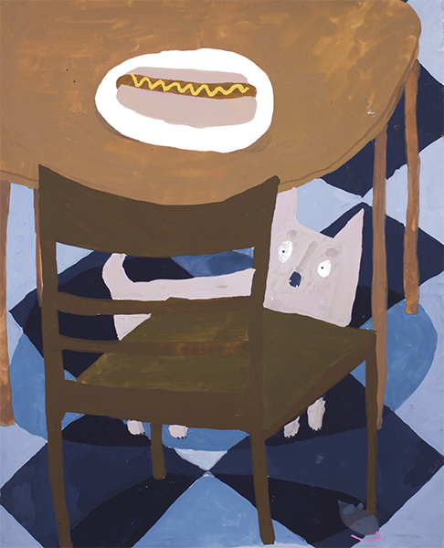
Cool Floor, Warm Dog
2016 |
Gouache on Paper 16" x 20"
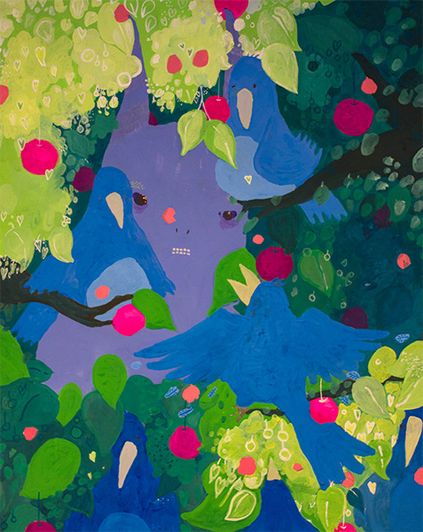
What Seems Sudden Has Been A Long Time Coming
2015 |
Gouache on Paper 16" x 20"
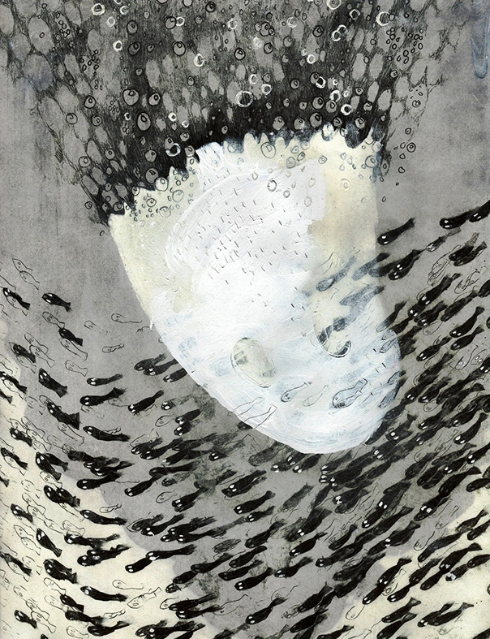
Belonging As A Matter Of Fact
2014 |
Mixed Media 8.5" x 11"
This animation was an exercise in drawing and patience. A ghost discovers and pursues valuable treasure. Ultimately, he cannot get what he wants.
Pearls For Eyes For Pearls
2015 |
Hand-Drawn Animation 2:23
I work at a museum lab, the Innovation Studio. We’re a small team working on interactive projects for the Carnegie Museums of Pittsburgh. I’ve worked on interactive exhibits and apps for the Andy Warhol Museum, Carnegie Museum of Art, and Carnegie Museum of Natural History. I'm particulatly proud of the projects included below. Partly because I played large roles in the UX design and software development but also because I was able to incorporate my own illustrations into these projects. I won't say that I love working in technology, but I do venture to make software that is as beautiful and physical as a painting can be.
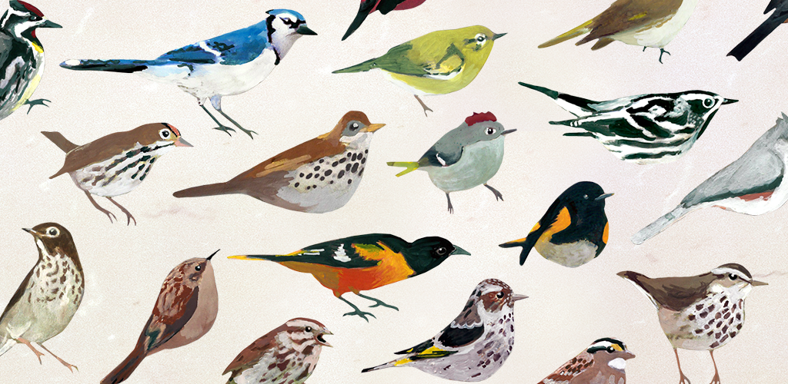
Dawn Chorus
2017
Dawn Chorus is an alarm clock application, available on Android and iOS. This app is a calming alternative to your usual blaring alarm. When the alarm goes off, birds join together to create a chorus of song. For further information about this project, see Introducing Dawn Chorus and Evaluating Dawn Chorus.

We Are Nature
2017
In October 2017, the Studio launched three interactive projects in Carnegie Museum of Natural History’s exhibition We Are Nature: Living in the Anthropocene. I was very excited to create the illustrations, and happy to bring them to life with code. For further information about these projects, see the Github repo. You can also read An Experiment In Data Visualization: a blog post about one of the projects which features over 6000 frames of interactive animation.
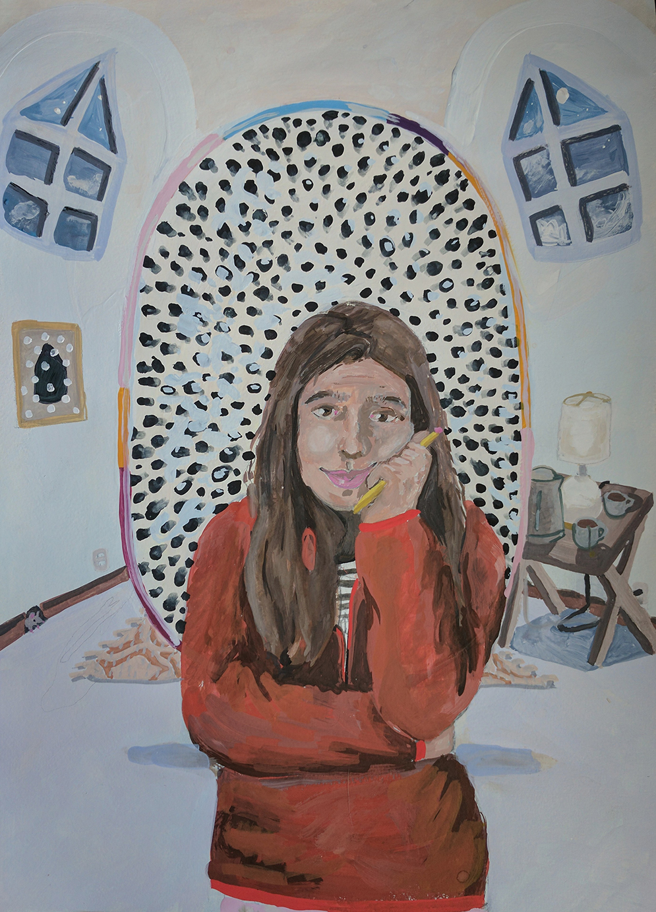
Self Portrait at 24
2017 |
Gouache on Paper